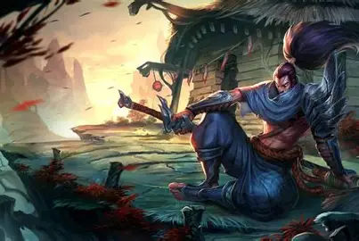
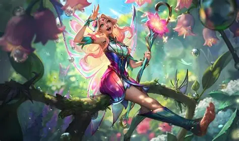

My Favorite Champions
Here are some champions I enjoy playing in League of Legends:
- Yasuo - high mobility and flashy combos
- Lux - great poke and long-range ultimate
- Lee Sin - versatile jungler with lots of outplay potential
- Jinx - High damage ADC
Why I Like LOL
I enjoy playing League of Legends because it combines strategy, teamwork, and mechanical skill. Every match feels different, and I love learning new champions and improving my skills.
 